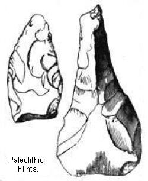
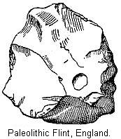
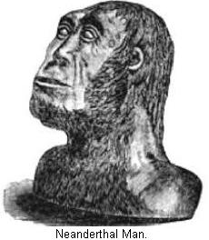

Beginning of the Glacial Age—Inter-glacial Age—Man living in Europe during this age—Map of Europe—Proof of former elevation of land—The animals living in Europe during this age—Conclusions drawn from these different animals—The vegetation of this period—Different climatic conditions of Europe during the Glacial Age—Proofs of a Glacial Age—Extent of the Glacial Ice—Evidence of warm Inter-glacial Age—The primitive state of man—Early English civilization—Views of Horace—Primitive man destitute of metals—Order in which different materials were used by man for weapons—Evidence, from the River Somme—History of Boucher de Perthes's investigations—Discussion of the subject—Antiquity of these remains—Improvement during Paleolithic Age—Description of the flint implements—Other countries where these implements are found—What race of men were these tribes—The Canstadt race—Mr. Dawkins's views—When did they first appear in Europe—The authorities on this question—Conclusion.
TERTIARY AGE, with its wonderful wealth of animal and plant life, gradually drew to its close. In our "Outline" we have named the period that next ensued the Glacial Age.2 This was sufficiently exact for our purpose then, but we must remember this is the name3 for a long series of years. During this period great changes in climate occurred. At its commencement, a genial temperate climate prevailed throughout Europe; and this, as we know, was preceded, during the Miocene Age, by a warm tropical one.4 This succession, then, shows us that, for some reason or other, the climate had been gradually growing colder. This change went forward uninterruptedly. Doubtless very gradually, from century to century, the seasons grew more and more severe, until, finally, the Summer's sun no longer cleared the mountains of the Winter's snow. This was the beginning of the Glacial Age proper.
The best authorities also suppose that the reign of snow and ice was broken by at least one return (possibly more) of genial climate, when animals and plants from the south again visited the countries of Northern Europe—only, however, to be once more driven forth by a return of arctic cold. But finally, before the increasing warmth of a genial Climate, the glaciers vanished, not to return again, and the Glacial Age became merged in that of the present.
It is no longer a question that man lived in Europe during the largest portion of this age, if not from the beginning. It is necessary, then, to come to a clear understanding of the successive stages of this entire age, and to trace the wonderful cycles of climate—the strange mutation of heat and cold, which must have exerted a powerful influence on the life, both animal and vegetable, of the period—and see when we first find decisive proofs of man's presence, and learn what we can of his condition.
The map of Europe, at the close of Pliocene times and the commencement of the Glacial Age, is of interest to us in several ways. From this it will be seen that it was considerably more elevated than at the present. As this is no fancy sketch, but is based on facts, it is well to outline them. Without the aid of man, land animals can not possibly pass from the mainland of a continent to an island lying some distance off the shore. But it is well known that animals like the rhinoceros, and several others, wandered as well over the surface of the British Islands as on the adjacent coast of Europe. We are therefore compelled to assume, that at that time the English Channel and the Irish Sea were not in existence. This necessitates an elevation of at least four hundred feet, which would also lay bare a large portion of the North Sea.5 In proof of this latter statement is the fact, that, at a distance from land in the North Sea, fishermen at the present day frequently dredge up bones and teeth of animals that then roamed in Europe.6
While there is no necessity for supposing an elevation greater than that required to lay bare a passage for animals back and forth, yet soundings undertaken by the British government have established the fact, that the ocean deepens very gradually away from the shores of the main-land until a depth of six hundred feet is reached, when the shore falls away very suddenly. This is supposed to be the sea-coast of that time. The English Channel would then have existed as the valley of the Seine, and the Rhine have prolonged its flow over the present bed of the North Sea. As the land stood at this height through a large portion of the Glacial Age, it is not at all unreasonable to suppose that primitive tribes hunted back and forth along these valleys, and so doubtless many convincing proofs of their presence at that early day lie buried underneath the waves of the sea. In like manner, at the south, we know that elephants, lions, and hyenas passed freely from Africa to Spain, Italy, and the Island of Crete,7 and, consequently, the Mediterranean Sea must have been bridged in one or two places at least.8
The change from Pliocene times to early Glacial was so gradual that quite a number of animals lived on from one to the other, and, as we have already stated, one of these species has even survived to our own times.9
But we note the arrival in Europe of a great number of new animals, and the diversity of species seems at first an inexplicable riddle. The key, however, is to be found in the great climatic changes, which we have already mentioned as occurring during this age. On the one hand, we find such animals as the musk-sheep, reindeer, and arctic fox, animals whose natural home is in high northern latitudes, where snow and ice prevail most of the year.10 Yet during this age they lived in Southern France and Italy, which must then have had a far different climate than that at present.
Were we to confine our attention to these alone we would be convinced that the climate of Europe at that time was arctic in its severity. But side by side with the remains of these animals are found others which imply an altogether different climate. The hippopotamus, now frequenting the rivers of Africa, during that period roamed as far north as Yorkshire, England.11 This animal could not live in a country where the cold was severe enough to form ice on the rivers. The remains of a number of other animals are found whose natural home is in the warm regions of the earth.12 These two groups of animals, one from the north and one from the south, show how varied was the climate of Europe during the Glacial Age.
In addition to these, there was also a large number of animals whose home is in the temperate regions of the earth—animals that thrive in neither extremes of heat and cold. This includes a great many animals of the deer kind, several varieties of bears and horses; in fact, the majority of those with which we are acquainted.13
Now, what conclusion follows from this assemblage of animals? Many theories have been put forward in explanation. It has been suggested that Europe at that time had a climate not unlike that of some portions of the earth at present; that is, a long and severe Winter was followed by a short but warm Summer. During the Winter reindeer and other northern animals would press from the north in search of food, but would retire on the approach of Spring, when their feeding grounds would in turn be occupied by bisons and animals of a southern habitat. In confirmation of this view it is pointed out that a vast collection of bones, from the bottom of a sink-hole or pond in Derbyshire, England, conclusively show that in the summer-time it was visited by bisons with their calves, and in Winter by reindeer.14 This theory is open to a great many objections. As is well known, some animals make quite extensive migrations annually, but we can scarcely believe that heavy, unwieldy animals like the hippopotamus, were then such industrious travelers as to wander every year from Italy to Northern England and return.15 But the very ground on which this theory rests, that of strongly contrasted summers and winters, could not be true of Europe or the western portions of it, owing to the presence of the Atlantic Ocean, and the influence which it inevitably exerts on the climate.16 We see, then, that the presence of these different animals can be explained only by supposing great secular changes in climate. Let us see if we can strengthen this view by an appeal to the vegetation of this period.
We have seen how important a guide as to climate were the remains of the vegetation of the early times. We therefore turn with more confidence to such discoveries as will tell us of the flora of this age. But there are many reasons why remains of plant growth should be few. As we shall soon learn, this was a period of flooded rivers; and in the gravels and loams thus formed is found our principal source of information as to the life of the age. But such a rush of waters would form gravelly banks or great beds of loam, and would sweep any plants which might be washed into its floods far out to sea; or if by chance they should become buried in such gravel beds, the action of water would speedily cause the decay of the tender portions, such as leaves, bark, and soft wood, in which case no profitable investigation could be made. Occasionally, however, around the shores of old lakes, vegetable beds have been buried, and we know that some mineral springs deposit a sort of protecting sediment on every thing with which they come in contact. By such means, at rare intervals, leaves, seeds, and fruits have been sealed up for future inspection, and from a careful study of all such instances much valuable information has been obtained. At one place in the valley of the Seine was discovered, under a bed of tufa, the remains of a forest growth. It is not doubted that the deposit belongs to the Glacial Age.17
Yet the forest growth reminds us of that prevalent during the Miocene Age. The fig-tree, canary, laurel, and box-tree grew in profusion. These are all southern forms. One severe winter would kill them all, and even hard frosts would prevent the ripening of their fruits.
Neither were the Summers hot and dry. This is shown by the presence of numerous plants which can not thrive in hot and dry localities, but live in the shady woods of Northern France and Germany. The evidence of this forest growth surely presents us an inviting picture of Europe during a portion of the Glacial Age.
We are not without evidence, also, of a much more severe climate. In a lignite bed (a species of coal) found in nearly the same latitude as the forest growth just mentioned, we detect the presence of trees that grow only in cold northern climates, such as birch, mountain pine, larch, and spruce.18 And in some peat-bogs of Southern Europe belonging to this age19 are found willows now growing only in Spitzbergen, and some species of mosses that only thrive far to the north. It is quite evident that this deposit testifies to an altogether different climate from that indicated by the deposit before mentioned. No theory of migration can explain this assemblage of plants, unless it be migration taking place very slowly, in consequence of an equally slow change of climate.
From what we have just learned of the animals and plants living in Europe during this age, we can frame some conception of the different climatic conditions of Europe. On the one hand, we have a country with a mild and genial climate. Trees of a warm latitude were then growing as far north as Paris, and we may well suppose Europe to have abounded in shady forests and grassy plains, through which flowed large rivers. It was just such a country as that in which elephants and southern animals would flourish, while vast herds of deer and bovine animals wandered over the entire length and breadth of the land. Where animal life was so abundant there were sure to be carnivorous animals also, and lions, hyenas, tigers, and other animals added to the variety of animal life.
This, however, is but one side of the picture. The other presents us with a very different scene; instead of an abundant forest growth, the land supported only dwarf birch, arctic willows, and stunted mosses. Arctic animals, such as musk-sheep and reindeer, lived all the year around in Southern France. The woolly mammoth lived in Spain and Italy. In short, the climate and conditions of life were vastly different in the two stages.
We must now turn our attention to the proofs of glaciers in Europe, the phenomena from which this age derives its name. Descriptions of Alpine glaciers are common enough, but as glaciers and the Glacial Age have a great deal to do with the antiquity of man, we can not do better than to learn what we can of their formation, and their wonderful extension during this period. The school-boy knows that by pressure he gives his snowball nearly the hardness of ice. He could make it really ice if he possessed sufficient strength. The fact is, then, that snow under the influence of pressure passes into the form of ice. In some cases nature does this on a large scale. Where mountains are sufficiently elevated to raise their heads above the snow line we know they are white all the year around with snow. What is not blown away, evaporated, or, as an avalanche, precipitated to lower heights, must accumulate from year to year. But the weight pressing on the lower portions of this snow-field must soon be considerable, and at length become so great, that the snow changes to the form of ice. But as ice it is no longer fixed and immovable. We need not stop to explain just how this ice-field moves, but the fact is that, though moving very slowly, it acts like a liquid body. It will steal away over any incline however small, down which water would flow. Like a river it fills the valleys leading down from the mountains. But, of course, the lower down it flows the higher the temperature it meets, and it will sooner or later reach a point where it will melt as fast as it advances. This stream of ice flowing down from snow-clad mountains is called a glacier. Those we are best acquainted with are but puny things compared with those of the polar regions, where in one case a great river of ice sixty miles wide, flowing from an unknown distance, some thousands of feet in depth (or height), pours out into the sea.20
We at once perceive that such a mass of ice could not pour down a valley without leaving unmistakable signs of its passage. The sides of the mountains would be deeply scarred and smoothed. Projecting knobs would be worn away. The surface of the valley, exposed to the enormous grinding power of the moving ice, would be crushed, pulverized, and dragged along with it. Pieces of stone, like that here represented, would form part of this moving débris, and as they were crowded along they would now and then grate over another piece of stone more firmly seated, and so their surface would be deeply scratched in the direction of their greatest length. There is always more or less water circulating under the Alpine glaciers, and the streams that flow from them are always very muddy, containing, as they do, quantities of crushed rock, sand, and clay.
If, for any reason, this earthy matter was not washed out it would form a bed of hard clay, in places packed with these striated stones. Such beds of clay are known as "till" or bowlder clay.21
This is descriptive, though in a very general way, of the glaciers as they exist to-day. Geologists have long been aware of the fact that they have convincing proofs of the former presence of glaciers in Northern Europe, where now the climate is mild. The mountains of Scotland and Wales show as distinct traces of glaciers as do those of the Alps. It is not necessary, in this hasty sketch, to enumerate the many grounds on which this conclusion rests. It is sufficient to state that by the united labors of many investigators in that field we are in possession of many conclusions relating to the great glaciers of this age which almost surpass belief; and yet they are the results of careful deductions. The former presence of this ice sheet itself is shown in a most conclusive manner by the bowlder clay formed underneath the great glacier, containing abundant examples of stone showing by their scratched surface that they have been ground along underneath the glacier. The rocks on the sides of the mountains are scratched exactly as are those in the Alps. By observing how high up on the mountains the striæ are, we know the thickness of the ice-sheet; and the direction in which it moved is shown in several ways.22
Briefly, then, the geologist assures us that when the cold of the Glacial Age was at its maximum glaciers streamed down from all the mountains of Scotland, Wales, and Northern England; that the ice was thick enough to overtop all the smaller hills, and on the plains it united in one great sea of ice some thousands of feet in thickness, that it stretched as far south as the latitude of London, England. But that to the west the ice streamed out across, the Irish Sea, the islands to the west of Scotland, and ended far out into what is now the Atlantic.23 But these glaciers, vast as they were, were very small compared with the glaciers that streamed out from the mountains of Norway and Sweden. These great glaciers invaded England to the south- west, beat back the glacier ice of Scotland from the floor of the North Sea, overran Denmark, and spread their mantle of bowlder clay far south into Germany.24
While such was the condition of things to the north, the glaciers of the Alps were many times greater than at present. All the valleys were filled with glacier ice, and they spread far out on the plains of Southern Germany and westward into France. The mountains of Southern France and the Pyrenees also supported their separate system of glaciers. Ice also descended from the mountains of Asia Minor and North Africa.25 In America we meet with traces of glaciers on a vast scale; but we can not pause to describe them here.26
It need not surprise us, therefore, to learn of reindeer and musk-sheep feeding on stunted herbage in what now constitutes Southern France. When a continuous mantle of snow and ice cloaked all Northern Europe, it is not at all surprising to find evidence of an extremely cold climate prevailing throughout its southern borders. We thus see how one piece of evidence fits into another, and therefore we may, with some confidence, endeavor to find proofs of more genial conditions when the snow and ice disappeared, and a more luxuriant vegetation possessed the land, and animals accustomed to warm and even tropical countries roamed over a large extent of European territory. In Switzerland it was long ago pointed out that after the ancient glaciers had for a long time occupied the low grounds of that country they, for some cause, retreated to the mountain valleys, and allowed streams and rivers to work over the débris left behind them. At Wetzikon most interesting conclusions have been drawn. We there learn that, after the retreat of the glaciers, a lake occupied the place, which in course of time became filled with peat, and that subsequently the peat was transformed into lignite. To judge from the remains of animals and plants, the climate must have been at least as warm as that at present; and this condition of things must have prevailed over a period of some thousands of years to explain the thick deposits of peat, from which originated the lignites.27
But we also know that this period came to an end, and that once more the ice descended. This is shown by the fact that directly overlying the lignite beds are alternating layers of sand and gravel, and, resting on these, glacier-born bowlders. The same conclusion follows from the discoveries made at many other places.
In Scotland it is well known that the bowlder clay contains every now and then scattered patches of peat and beds of soil either deposited in lakes or rivers. The only explanation that can be given for their presence is that they represent old land surfaces; that is, when the land was freed from ice, and vegetation had again clothed it in a mantle of green. In this cut is shown one of these beds. Both above and below are the beds of bowlder clay. The peat in the centre varies from an inch to a foot and a half in thickness, and contains many fragments of wood, sticks, roots, etc.; and of animals, numerous beetles were found, one kind of which frequents only places where deer and ruminant animals abound.
From a large number of such discoveries it is conclusively shown that, after all, Scotland was smothered under one enormous glacier, a change of climate occurred, and the ice melted away. Then Scotland enjoyed a climate capable of nourishing sufficient vegetation to induce mammoths, Irish deer, horses, and great oxen to occupy the land. But the upper bowlder clay no less conclusively shows that once more the climate became cold, and ice overflowed all the lowlands and buried under a new accumulation of bowlder clay such parts of the old land surface as it did not erode. Substantially the same set of changes are observed in English and German geology.28
Having thus given an outline of the climatic changes which took place in Europe during the Glacial Age, and the grounds on which these strange conclusions rest, we must now turn our attention to the appearance of man.
The uncertainties which hung over his presence in the earlier periods, spoken of in the former chapter, do not apply to the proofs of his presence during this age, though it is far from settled at what particular portion of the Glacial Age he came into Europe. We must remember we are to investigate the past, and to awaken an interest in the history of a people who trod this earth in ages long ago. The evidence on which we establish a history of the early tribes of Europe is necessarily fragmentary, but still a portion here and a piece there are found to form one whole, and enable us to form quite a vivid conception of manners and times now very far remote.
It is not claimed that we have surmounted every difficulty—on the contrary, there is yet much to be deciphered; but, in some respects, we are now better acquainted with these shadowy tribes of early times than with those whose history has been recorded by the historian's facile pen. He has given us a record of blood. He acquaints us with the march of vast armies, tells us of pillaged cities, and gives us the names of a long roll of titled kings; but, unfortunately, we know little of the home life, the occupation, or of those little things which make up the culture of a people. But the knowledge of primitive tribes, gathered from the scanty remains of their implements, from a thorough exploration of their cavern homes, has made us acquainted with much of their home life and surroundings: and we are not entirely ignorant as to such topics as their trade, government, and religion. We must not forget that this is a knowledge of tribes and peoples who lived here in times immeasurably ancient as compared with those in existence at the very dawn of history.
We must try and form a mental picture of what was probably the primitive state of man; and a little judicious reasoning from known facts will do much for us in this direction. Some writers have contended that the first condition of man was that of pleasing innocence, combined with a high degree of enlightenment, which, owing to the wickedness of mankind, he gradually lost. This ideal picture, however consonant with our wishes, must not only give way before the mass of information now at our command, but has really no foundation in reason; "or, at any rate, if this primitive condition of innocence and enlightenment ever existed, it must have disappeared at a period preceding the present archæological investigations."29 Nothing is plainer than that our present civilization has been developed from barbarism, as that was from savagism.30 We need go back but a few centuries in the history of any nation, before we find them emerging from a state of barbarism. The energy and intelligence of the Anglo-Saxon has spread his language to the four corners of the globe; he has converted the wilderness into fruitful fields, and reared cities in desert lands: yet his history strikingly illustrates our point. A century back, and we are already in a strange land. The prominent points of present civilization were yet unthought of. No bands of iron united distant cities; no nerves of wire flashed electric speech. The wealth of that day could not buy many articles conducive of comfort, such as now grace the homes of the poor. The contrast is still more apparent when we recall another of the countless centuries of the past. England, with Europe, was but just awakening to modern life. Printing had but just been invented. Great discoveries had been made, and mankind was but just beginning those first feeble efforts which were to bring to us our modern comforts. But a millennium of years ago, and the foundation of English civilization had but just been laid by the union of the rude Germanic tribes of the Saxons and the Angles. Similar results attend the ultimate analysis of any civilization. It was but yesterday that wandering hordes, bound together by the loose cohesion of tribal organization, and possessing but the germ of modern enlightenment, held sway in what is now the fairest portion of the world: and we, the descendants of these rude people, must reflect that the end is not yet—that the onward march of progress is one of ever hastening steps—and that, in all human probability, the sun of a thousand years hence will shine on a people whose civilization will be as superior to ours as the light of day exceeds the mellow glow of a moon-lit night.
If such are the changes of but a few centuries, what must we not consider the changes to have been during the countless ages that have sped away since man first appeared on the scene! The early Greek and Roman writers were much nearer right when they considered primitive man to have been but a slight degree removed from the brute world. Horace thus expresses himself: "When animals first crept forth from the newly formed earth, a dumb and filthy herd, they fought for acorns and lurking places —with their nails, and with fists—then with clubs—and at last with arms, which, taught by experience, they had forged. They then invented names for things, and words to express their thoughts; after which they began to desist from war, to fortify cities, and enact laws." The learning of modern times leads to much the same conclusion.
It is evident that primitive man must have been destitute of metals; for it requires a great deal of knowledge and experience to extract metals from their ores. In the eyes of savages, the various metallic ores are simply so many varieties of stone— much less valuable for his purposes than flint, or some other varieties. We know it to be historically true, that a great many nations have been discovered utterly destitute of any knowledge of metals.
When we reflect how much of our present enlightenment is due to the use of metals, we can readily see that their discovery marks a most important epoch in the history of man. There is, then, every reason to suppose that stone was a most important article for primitive man. It was the material with which he fought his battle for existence, and we need not be surprised that its use extended through an enormously long period of time. Not only was primitive man thus low down in the scale, but of necessity his progress must have been very slow.
The time during which men were utterly destitute of a knowledge of metals, far exceeds the interval that has elapsed since that important discovery.31 Scholars divide the stone age into two parts. In the first, the stone implements, are very few, of simple shapes, and in the main formed of but one variety of stone—generally flint~-and they were never polished. In the second division, we meet with a great many different implements, each adapted to a different purpose. Different varieties of stone were employed, and they also made use of bone, shell, and wood, which were often beautifully polished.
From what we have learned of the development of primitive society, it will not surprise us to learn that the first division of the age of stone comprises a vastly greater portion of time, and is far more ancient, than the second. We will give an outline showing the order of use of different materials; but it is here necessary to remark that Bronze was the first metal that man learned to use, and Iron the second.
| Age of Stone. | Rough, or Old Stone Age | Paleolithic |
| Polished, or New Stone Age | Neolithic | |
| Age of Metals. | Bronze Age. Iron Age. |
|
In this outline the words Paleolithic and Neolithic are the scientific terms for the two divisions of the Stone Age, and will be so used in these pages.
The only races of men that we could expect to find in Europe during the Glacial Age would be Paleolithic tribes, and it is equally manifest that we must find traces of them in beds of this age, or in association with animals that are characteristic of this age, or else we can not assert the existence of man at this time. The valley of the river Somme, in Northern France, has become classical ground to the student of Archæology, since it was there that such investigations as we have just mentioned were first and most abundantly made. It is now well known that the surface features of a country—that is, its hills and dales, its uplands and lowlands—are mainly due to the erosive power of running water. Our rivers have dug for themselves broad valleys, undermined and carried away hills, and in general carved the surface of a country, until the present appearance is the result. It must be confessed that when we perceive the slow apparent change from year to year, and from that attempt to estimate the time required to produce the effects we see before us, we are apt to shrink from the lapse of time demanded for its accomplishment. Let us not forget that "Time is long," and that causes, however trifling, work stupendous results in the course of ages.
But a river which is thus digging down its channel in one place, deposits the materials so dug away at other and lower levels, as beds of sand and gravel. In the course of time, as the river gradually lowers its channel, it will leave behind, at varying heights along its banks, scattered patches of such beds. Wherever we find them, no matter how far removed, or how high above the present river, we are sure that at some time the river flowed at that height; and standing there, we may try and imagine how different the country must have looked before the present deep valley was eroded.
In the case of the river Somme, we have a wide and deep valley, a large part of which has been excavated in chalk rock, through which the river now winds its way in a sinuous course to the English Channel. Yet we feel sure that at some time in the past it was a mighty stream, and that its waters surged along over a bed at least two hundred feet higher than now. In proof of this fact we still find, at different places along the chalky bluff, stretches of old gravel banks, laid down there by the river, "reaching sometimes as high as two hundred feet above the present water level, although their usual elevation does not exceed forty feet."32
The history of the investigation of the ancient gravel beds of the Somme is briefly this: More than one instance had been noted of the finding of flint implements, apparently the work of men, in association with bones of various animals, such as hyenas, mammoths, musk-sheep, and others, which, as we have just seen, lived in Europe during the Glacial Age. In a number of cases such finds had been made in caves. But for a long time no one attributed any especial value to these discoveries, and various were the explanations given to account for such commingling. A French geologist, by the name of Boucher DePerthes, had noted the occurrence of similar flint implements, and bones of these extinct animals, in a gravel pit on the banks of the Somme, near Abbeville, France. He was convinced that they proved the existence of man at the time these ancient animals lived in Europe. But no one paid any attention to his opinions on this subject, and a collection of these implements, which he took to Paris in 1839, was scarcely noticed by the scientific world. They were certainly very rude, and presented but indistinct traces of chipping, and perhaps it is not strange that he failed to convince any one of their importance. He therefore determined to make a thorough and systematic exploration of these beds at Abbeville. In 1847 he published his great work on this subject, giving over sixteen hundred cuts of the various articles he had found, claiming that they were proof positive of the presence of man when the gravels were depositing.
Now there are several questions to be answered before the conclusions of the French geologist can be accepted. In the first place, are these so-called flint implements of human workmanship? From our illustrations, we see that they are of an oval shape, tending to a cutting edge all around, and generally more or less pointed at one end. The testimony of all competent persons who have examined them is, that however rude they may be, they were undoubtedly fashioned by man. Dr. C. C. Abbott has made some remarks on implements found in another locality, equally applicable to the ones in question. He says: "We find, on comparing a specimen of these chipped stones with an accidentally fractured pebble, that the chipped surfaces of the former all tend toward the production of a cutting edge, and there is no portion of the stone detached which does not add to the availability of the supposed implement as such; while in the case of a pebble that has been accidentally broken, there is necessarily all absence of design in the fracturing."33
Like the watch found on the moor, they show such manifest evidence of design, that we can not doubt that they were produced by the hand of man. But it is not enough to know that they are artificial, we must also know that they are of the same age as the beds in which they are found.
This cut represents a section of a gravel pit at St. Acheul, on the Somme. The implements are nearly always found in the lowest strata, which is a bed of gravel from ten to fourteen feet thick. Overlying this are beds of marl, loam, and surface soil, comprising in all a depth of fourteen feet. It has been suggested that the implements are comparatively recent, and have sunk down from above by their own weight, or perhaps have been buried in artificial excavations. The beds are however too compact to admit of any supposition that they may have been sunk there; and if buried in any excavation, evident traces of such excavation would have remained. We can account for their presence there in no other way than, that when the river rolled along at that high elevation, and deposited great beds of sand, these implements were someway lost in its waters, and became buried in the gravel deposits.
Finally, we have to consider the age of the deposits. This is a question that can be answered only by geologists, and we may be sure that more than ordinary attention has been bestowed upon them. The remains of many animals characteristic of the Glacial Age were found in the beds at Abbeville. These include those of the elephants, rhinoceros, hyenas, cave-bear, and cave-lion.34
In the formation of these gravel beds, ice has undoubtedly played quite an important part. Bowlders that could have got there only by the aid of ice, are found in several localities. Evidence gathered from a great many different sources all establish the fact that these gravels date as far back as the close of the Glacial Age at least, and there are some reasons for supposing them to be interglacial.
We can easily see that the melting away of the immense glaciers that we have been describing would produce vast floods in the rivers, and it is perhaps owing to the presence of such swollen rivers that are due the great beds of surface soil, called loam or loess, found in all the river valleys of France and Germany.35 These deposits frequently overlie the gravel beds. They are then of a later date than the beds in which are found such convincing proofs of the presence of man, and if they themselves date from the close of the Glacial Age, it is no longer a question whether the gravel beds themselves belong to that age. Thus we see that we can no longer escape the conclusions of Boucher DePerthes. The discovery of rudely worked flints in the drift of the Somme River thus establishes the fact that some time during the Glacial Age, man in a Paleolithic state lived in France.
Geological terms convey to us no definite ideas as to the lapse of time, and we have an instinctive desire to substitute for them some term of years. In most cases this is impossible, as we have no means to measure the flight of past time, nor are we yet prepared to discuss the question of time, since to do so we must learn a great deal more about the cause of the Glacial Age. We might, however, cite statements which can not fail to impress us with the fact that a great extent of time has passed.
In the case of the river Somme we have a valley in some places a mile or more in width, and about two hundred feet in depth. This has mostly been excavated in chalk rock. Taking our present large rivers as a basis, it would require from one to two hundred thousand years for the Somme to perform this work.36 It will not do, however, to take the present action of our rivers as a guide, since we have every reason to suppose this work went forward much more rapidly in past times. But we can not escape the conclusion that it demands a very long time indeed to explain it. The valley has remained in its present shape long enough to admit the formation of great beds of peat in some portions. Peat is formed by the decomposition of vegetable growth. Its growth is in all cases slow, depending entirely upon local circumstances. European scholars who have made peat formation a special study assure us that to form such immense beds as occur near Abbeville, several thousand years are required, even under the most favorable conditions.
Yet we would be scarcely willing to rest such important conclusions as the foregoing on the researches of one individual, or in one locality. As already stated, DePerthes made his discoveries public in 1847. Yet they were so opposed to all that had been believed previously, that but few took the pains to investigate for themselves. In 1853, Dr. Rigollot, of Amiens, who had been skeptical as to DePerthes, commenced to look for himself in the gravel beds at St. Acheul, about nine miles below Abbeville. As might be expected, he was soon convinced.
It may be said that the scientific world formally accepted the new theory when such English scientists as Evans, Falconer, Lyell, and Prestwich reported in its favor. Since that time, many discoveries of ancient implements have been made at various places in France and England under circumstances similar to those in the valley of the Somme. In England they have been found along almost all the rivers in the southern and south- eastern part. One class of discoveries there gives us new ideas as to the extent of time that has passed since they were deposited. That is where they occur in gravel beds having no connection with the present system of rivers. In one case the gravel forms a hill fifteen feet high, situated in the midst of a swampy district, surrounded on all sides by low, flat surfaces. Several such instances could be given; but, in all such cases, we can not doubt that, somewhere near, there once rolled the waters of an ancient river, that man once hunted along its banks, and that, owing to some natural cause, the waters forsook their ancient bed—and that since then, in the slow course of ages, the action of running water has removed so much of the surface of the land near there, that we can not guess at its ancient configuration: we only know, from scattered patches of gravel, that we are standing on the banks of an ancient water-course.
One instance, illustrative of the great change that has come over the surface features of the country, demanding for their accomplishment a great lapse of time, is furnished by the Isle of Wight. That island is now separated from the mainland by a narrow channel, called the South Hampton Water, or the Solent Sea.
It is now known that this is nothing but an old river channel, in which the sea has usurped the place of the river. The coast is a river embankment, with the usual accompaniments of gravel beds, flint implements, and fresh water shells. On the shores of the island we find the opposite bank of the old river. A very great change must have taken place in the surface features before the sea could have rolled in and cut off the Isle of Wight from the mainland.
In speaking of the length of time demanded for this change, Dr. Evans says: "Who can fully understand how immeasurably remote was the epoch when what is now that vast bay was high and dry land, and a long range of chalk downs, six hundred feet above the sea, bounded the horizon on the South? And yet that must have been the sight that met the eye of primitive man who frequented the banks of that ancient river, which buried their handiwork in gravels that now cap the cliffs—and of the course of which so strange and indubitable a memorial subsists in what has now become the Solent Sea?"37
The illustrations scattered through this essay are representations of the stone implements found in the drift of European rivers. During all the long course of time supposed to be covered by the Paleolithic Age, there are but very few evidences of any improvement, as far as we can judge from the implements themselves. This is in itself a melancholy proof of the low condition of man. He had made so little advance in the scale of wisdom, he possessed so little knowledge, he was so much a creature of instinct, that, during the thousands of years demanded for this age, he made no appreciable progress. The advance of the last century was many times greater than that of the entire Paleolithic Age. A blow struck on one end of a piece of flint will, owing to the peculiar cleavage of flint, split off pieces called flakes. This is the simplest form of implement used by man. It is impossible to say with certainty how they were used; but, from the evidence observed on them, they were probably used as scrapers. The men of that day doubtless knew some simple method of preparing clothing from the skins of the animals they had killed, and probably many of these sharp-rimmed flakes were used to assist in this primitive process of tanning.
When the piece of flint itself was chipped into form, it was one whose shape would indicate a spear-head or hatchet. We present illustrations of each. Forms intermediate between these two are found. Some have such a thick heavy base that it is believed they were used in the hand, and had no handle or haft.
Others, with a cutting edge all round, may have been provided with a handle. M. Mortillet, of France, who has had excellent opportunities of studying this question very thoroughly, thinks that the hatchet was the only type of implement they possessed, and that it was used for every conceivable purpose—but that their weapon was a club, all traces of which have, of course, long since vanished away.38
These few implements imply that their possessors were savages like the native Australians. In this stage of culture, man lived by hunting, and had not yet learned to till the ground, or to seek the materials out of which his implements were made by mining. Re merely fashioned the stones which happened to be within reach in the shallows of rivers as they were wanted, throwing them away after they had been used. In this manner the large numbers which have been met with in certain spots may be accounted for. Man at this time appears before us as a nomad hunter, poorly equipped for the struggle of life, without knowledge of metals, and ignorant of the art of grinding his stone tools to a sharp edge.39 Of course we can not hope to learn much of their social condition other than that just set forth.
DePerthes found some flints which show evidence of their human origin, and yet it would be very difficult to say what was their use. He thinks they may have a religious significance, and has set forth a great variety of eloquent surmises respecting them. It only need be said that such theorizing is worse than useless. That while it is very probable these tribes had some system of belief, yet there is no good reason for supposing these flints had any connection with it. It has been supposed, from another series of wrought flints, that the men of this epoch were possessed of some sentiments of art, as pieces have been found thought to represent the forms of animals, men's faces, birds, and fishes; but as very few have been able to detect such resemblances, it is safe to say they do not exist.
As the love of adornment is almost as old as human nature itself, we may not be surprised to find traces of its sway then. Dr. Rigollot found little bunches of shells with holes through either end. The supposition is that these were used as beads; which is not at all strange, considering how instinctively savage men delight in such ornaments. These ancient hunters made use of beads partially prepared by nature.
Europe is not the only country where the remains of this savage race are found. They are found in the countries bordering the Mediterranean in Northern Africa, and in Egypt. In this latter country they are doubtless largely buried under the immense deposits of Nile mud; yet in 1878 Professor Haynes discovered in Upper Egypt scrapers and hatchets, pronounced by archæologists to be exactly similar to those of the river Somme. We are not informed as to their geological age, but there can be no question that they are much older than any monument of Egyptian civilization hitherto known.40
Paleolithic implements have also been found in Palestine and in India. In the latter country the beds are so situated that they present the same indicia, of age as do those of the Somme Valley. A great portion of the formation has been removed, and deep valleys cut in them by running water.41 They have also been found in at least one locality in the United States; that is in the glacial gravel of the valley of the Delaware at Trenton, New Jersey. We must not confound these remains with those of the Indian tribes found scattered over a large extent of surface. Those at Trenton also are not only in all respects, except materials, similar to those of the Somme, but are found imbedded in a formation of gravel that was deposited at least as far back as the close of the Glacial Age, thus requiring the passage of the same long series of years since they were used, as do the implements of European rivers.42 We must also bear in mind that no country has been so carefully explored for these implements as has Europe, and that the very country, Asia, where, for many reasons, we might hope to find not only unequivocal proofs of man's presence but from our discoveries be able to clear up many dark points, as to the race, origin, and fate of these primitive tribes, is yet almost a sealed book.
But the scattered discoveries we have instanced show us that the people whose implements have been described in this chapter were very widely dispersed over the earth, and everything indicates that they were far removed from us in time. The similarity in type of implements shows that, wherever found, they were the same people, in the same low savage state of culture—"Alike in the somber forests of oak and pine in Great Britain, and when surrounded by the luxuriant vegetation of the Indian jungle."43
We have yet two important points to consider. The first is, what race of men were these river tribes? and second, when did they arrive in Europe? Did they precede the glacial cold? did they make their appearance during a warm interglacial period? or was it not until the final retreat of the glaciers that they first wandered into Europe? These questions are far from settled; yet they have been the object of a great amount of painstaking research.
To determine the first point, it is necessary that anatomists have skeletons of the men of this age, to make a careful study of them. But for a great many reasons, portions of the human skeleton are very rarely found in such circumstances that we are sure they date back to the Paleolithic Age, and especially is this true of the men of the River Drift. In a few instances fragmentary portions have been found.
M. Quatrefages, of France, who is certainly a very high authority on these points, thinks that the hunter tribes of the River Drift belonged to the Canstadt race—"so named from the village of Canstadt, in Germany, near which a fossil skull was discovered in 1700, and which appears to be closely allied to the Neanderthal skull, discovered near Dusseldorf in 1857, and about which so much has been written."44 Quatrefages supposes that this type of man is still to be found in certain Australian tribes. These are not mere guesses, but are conclusions drawn from careful study by eminent European scholars.45
It is well known that a competent naturalist needs but a single fossil bone to describe the animal itself, and tell us its habits. So also anthropologists need but fragments of the human skeleton, especially of the skull, to describe characteristics of the race to which the individual belonged.
This cut, though an ideal restoration, is a restoration made in accordance with the results of careful study of fragmentary skulls found in various localities in Europe. The head and the face present a savage aspect; the body harmonized with the head; the height was not more than five feet and a half; yet the bones are very thick in proportion to their length, and were evidently supplied with a powerful set of muscles, since the little protuberances and depressions where the muscles are attached are remarkably well developed.46 Huxley and Quatrefages have both pointed out that representatives of this race are to be found among some Australian tribes. Among the races of this great island there is one, distributed particularly in the province of Victoria, in the neighborhood of Port Western, which reproduces in a remarkable manner, the characters of the Canstadt race."47 Not the least interesting result of this discovery is the similarity of weapons and implements. "With Mr. Lartet, we see in the obsidian lances of New Caledonia the flint heads of the lower alluvium of the Somme. The hatchet of certain Australians reminds us, as it did Sir Charles Lyell, of the Abbeville hatchet.48
Yet some hesitate about accepting these interesting inferences, thinking that the portions of the human skeleton thus far recovered, which are beyond a doubt referable to this period, are too fragmentary to base such important conclusions upon. This is the view of Boyd Dawkins, who thinks "we can not refer them to any branch of the human race now alive."49 "We are without a clew," continues he, "to the ethnology of the River Drift man, who most probably is as completely extinct as the woolly rhinoceros or the cave bear."50 Future discoveries will probably settle this point.
It is yet a much disputed point to what particular portion of the Glacial Age we can trace the appearance of man. We can profitably note the tendency of scientific thought in this direction. But a short time has elapsed since a few scholars here and there began to urge an antiquity for man extending back beyond the commonly accepted period of six thousand years. Though it is now well known and admitted that there are no good grounds for this estimate, yet such was its hold, such its sway over scientific as well as popular thought, that an appeal to this chronology was deemed sufficient answer to the discoveries of DePerthes, Schmerling, and others. It was but yesterday that this popular belief was overthrown and due weight given the discoveries of careful explorers in many branches, and the antiquity of man referred, on indisputable grounds, to a point of time at least as far back as the close of the preceding geological age.51
It seems as if here a halt had been called, and all possible objections are urged against a further extension of time. It is, of course, well to be careful in this matter, and to accept only such results as inevitably follow from well authenticated discoveries. But it also seems to us there is no longer any doubt that man dates back to the beginning of that long extended time we have named the Glacial Age.52
In the first place, we must recall the animals that suddenly made their appearance in Europe at the beginning of this age. Though there were a number of species, since become extinct, the majority of animal forms were those still living.53
These are the animals with which man has always been associated. There is therefore no longer any reason to suppose the evolution of animal life had not reached that stage where man was to appear. We need only recall how strongly this point was urged in reference to the preceding geological epoch, to see its important bearings here. Mr. Boyd Dawkins has shown that the great majority of animals which invaded Europe at the commencement of this age, can be traced to Northern and Central Asia, whence, owing to climatic changes, they migrated into Europe.54
Inasmuch as man seems to have been intimately associated with these animals, it seems to us very likely that he came with them from their home in Asia. We think the tendency of modern discoveries is to establish the fact that man arrived in Europe along with the great invasion of species now living.55
Turning now to the authorities, we find this to be the accepted theory of many of those competent to form an opinion.
In England Mr. Geikie has strongly urged the theory that the Glacial Age includes not only periods of great cold, but also epochs of exceptional mildness; and he strongly argues that all the evidence of the River Drift tribes can be referred to these warm interglacial epochs; in other words, that they were living in Europe during the Glacial Age.56
In answer to this it has been stated that the relics of River Drift tribes in Southern England overlie bowlder clay, and must therefore be later in origin than the Glacial Age.57
But, Mr. Geikie and others have shown that the ice of the last great cold did not overflow Southern England,58 so that this evidence, rightly read, was really an argument in favor of their interglacial age.59 The committee appointed by the British Association to explore the Victoria Cave, near Settle, urge this point very strongly in their final report of 1878.60 To this report Mr. Dawkins, a member of the committee, records his dissent, but in his last great work he freely admits that man was living in England during the Glacial Age, if he did not, in fact, precede it.61
Mr. Skertchley, of the British coast survey, in 1879,62 announced the discovery in East Anglia of Paleolithic, implements underlying the bowlder clay of that section. Mr. Geikie justly regards this as a most important discovery.63
Finally Mr. Dawkins, in his address as President of the Anthropological section of the British Association, in 1882, goes over the entire ground. After alluding to the discovery of paleolithic implements in Egypt, India, and America, he continues: "The identity of implements of the River Drift hunter proves that he was in the same rude state of civilization, if it can be called civilization, in the Old and the New World, when the hand of the geological clock struck the same hour. It is not a little strange that this mode of life should have been the same in the forests of the North, and south of the Mediterranean, in Palestine, in the tropical forests of India, and on the western shores of the Atlantic." This, however, is not taken as proving the identity of race, but as proving that in this morning-time of man's existence he had nowhere advanced beyond a low state of savagism. Mr. Dawkins then continues: "It must be inferred from his wide-spread range that he must have inhabited the earth for a long time, and that his dispersal took place before the Glacial epoch in Europe and America. I therefore feel inclined to view the River Drift hunter as having invaded Europe in preglacial times, along with other living species which then appeared." He also points out that the evidence is that he lived in Europe during all the changes of that prolonged period known as the Glacial Age.64
Sir John Lubbock also records his assent to these views. He says on this point: "It is, I think, more than probable that the advent of the Glacial Period found man already in possession of Europe."65
In our own country Prof. Powell says: "It is now an established fact that man was widely scattered over the earth at least as early as the beginning of the Quaternary period, and perhaps in Pliocene times."66
This completes our investigation of the men of the River Drift. We see how, by researches of careful scholars, our knowledge of the past has been enlarged. Though there are many points which are as yet hidden in darkness, we are enabled to form quite a clear mental picture of this early race. Out of the darkness which still enshrouds the continent of Asia we see these bands of savages wandering forth; some to Europe, Africa, and the west; others to America and the east.
This was at a time when slowly falling temperature but dimly prophesied a reign of arctic cold, still far in the future. This race does not seem to have had much capacity for advancement, since ages came and went leaving him in the same low state. During the climax of glacial cold he doubtless sought the southern coasts of Europe along with the temperate species of animals. But whenever the climatic conditions were such that these animals could find subsistence as far north as England he accompanied them there, and so his remains are found constantly associated with theirs throughout Europe. Though doubtless very low in the scale, and at the very foot of the ladder of human progress, we are acquainted with no facts connecting them with the higher orders of animals. If such exists, we must search for them further back in geological time. The men of the River Drift were distinctively human beings, and as such possessed those qualities which, developing throughout the countless ages that have elapsed, have advanced man to his present high position.
REFERENCESChapter II: Early Geological
Periods.
Chapter IV: Cave-men.